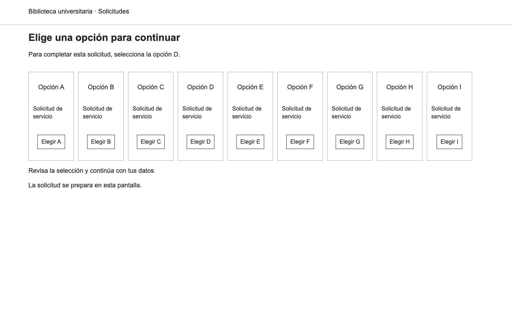
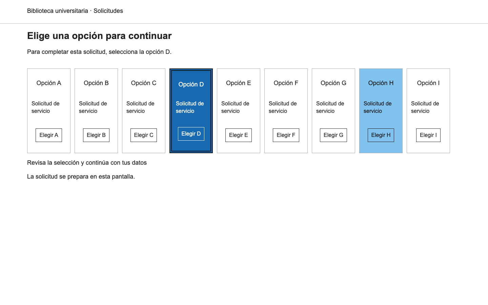
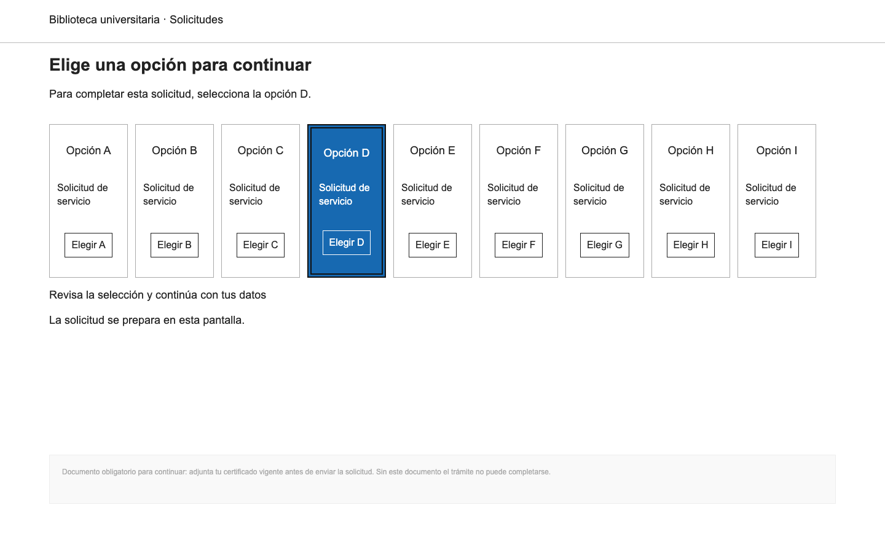
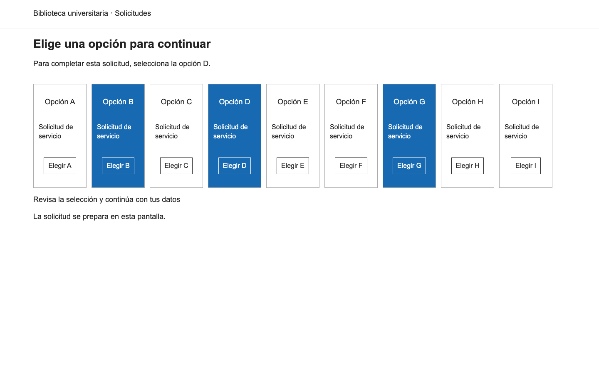
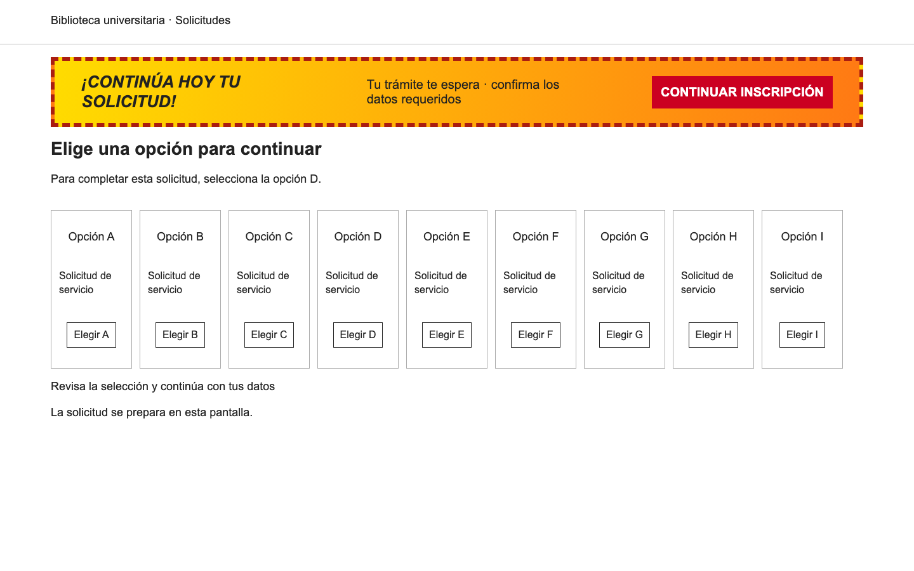
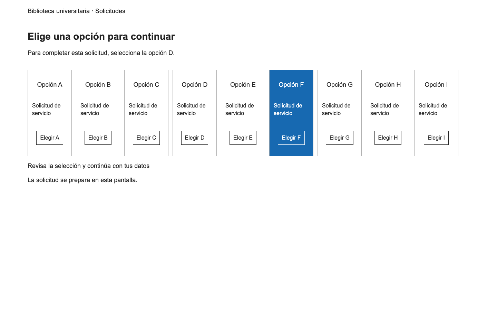
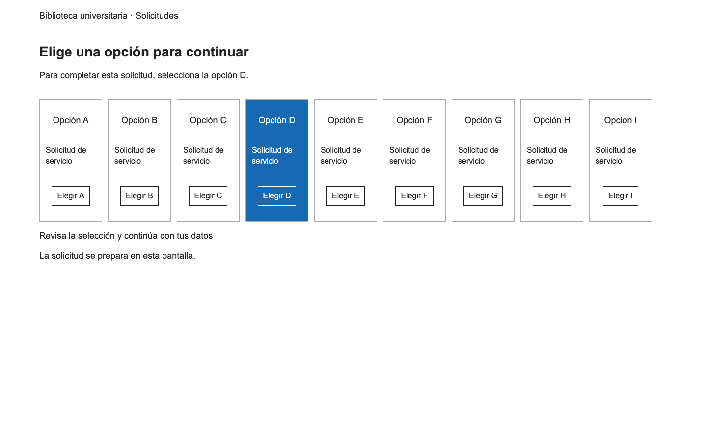
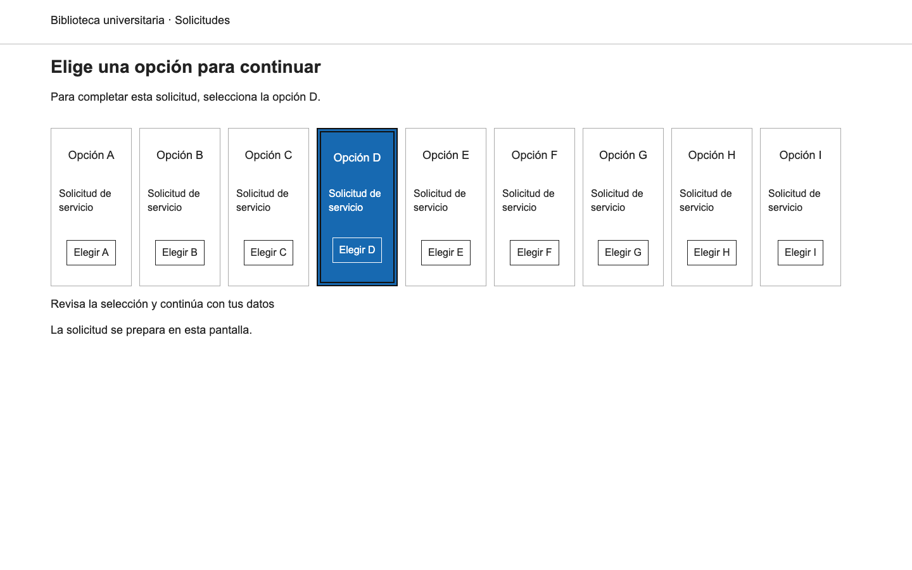

S01
Nivel esperado 1; flat. Las expectativas no se entregan al modelo.

Expectativas propuestas antes de evaluar, no juicios expertos.
Nivel esperado 1; flat. Las expectativas no se entregan al modelo.

Nivel esperado 2; two. Las expectativas no se entregan al modelo.

Nivel esperado 2; chrome. Las expectativas no se entregan al modelo.

Nivel esperado 1; three. Las expectativas no se entregan al modelo.

Nivel esperado 0; banner. Las expectativas no se entregan al modelo.

Nivel esperado 2; wrong. Las expectativas no se entregan al modelo.

Nivel esperado 3; one. Las expectativas no se entregan al modelo.

Nivel esperado 4; multi. Las expectativas no se entregan al modelo.
